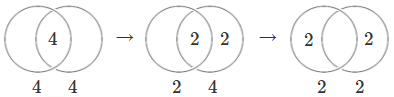
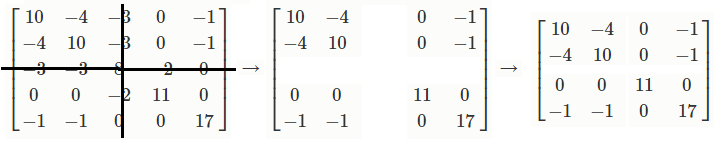

Searching for Parliament
Selecting a group of people to represent a nation is an example of what computer science calls an assignment search problem. Which candidates are the most representative of the voters?
We'll construct a mathematical model of the assignment search problem, implement this model in the Python programming language with an optimization package called Gurobi, and compute and visualize an optimal solution.
The implementation of the model and the structure of this explanation is forked from the work of Emilien Dupont (on github and hosted as a featured example on Gurobi's website)
Click the screenshot to skip directly to the Live Demo!

Problem Description

Northern England gets rid of district boundaries because there was too much debate about where the boundaries should go. It wants to elect 4 reps (representatives). And it wants to space them out instead of having them all from the middle. It wants regional interests to be represented and it doesn't want all the seats to be taken by people from the same neighborhood in the middle of Northern England.
Several good potential reps have decided to run, but it remains to decide which of the reps should win.
Selecting reps from the middle of Northern England would be advantageous as they would have the most votes overall. However, voters from the middle of Northern England would be overrepresented and voters from the coast would be very far from their from their reps.
We will find the optimal tradeoff between reps being near all the voters and voters having reps nearby.
Mathematical Model
Our problem is related to a very famous problem in computer science called the knapsack problem. It differs in many ways. It is similar in how it can be solved. Both are kinds of binary search. A search problem tries to find a combination of variables that is in some way the best combination. One way to approach such a problem is the branch and bound method. Here is a video on the branch and bound method from a fantastic Coursera course in the field of discrete optimization. From this video, just understand that there is a large number of possible choices to make and that they can all be organized in a tree structure. (The actual algorithm for searching through the tree will be taken care of by Gurobi, and we don't talk about it below.) We still haven't said what the score is for each choice (or path) in the tree, so let's do that. Most of the writing below is about that. Each choice in the tree represents whether a rep wins. The first split is for the first rep, the second split is for the second rep, etc.

This tree is not for the problem at hand, but our problem is similar because it has the same binary variables $x_i$.
Let us now formulate a mathematical model for our problem.
We need to say when we choose a rep. Let's list all the reps as rep #1, rep #2, rep #3, etc, and let's make variables for each one. If we choose rep #1, then $x_1=1$ and if we don't choose rep #2, then $x_2=0$. Basically, $x_j$ is binary. \[ x_j = \left\{\begin{array}{ll} 1 & \text{if we choose rep #j, }\\ 0 & \mathrm{otherwise.} \end{array}\right. \]
We need to say how close a voter is to a rep. Let's list all the voters as voter #1, voter #2, etc, and let's make measurements for each voter and rep combination. If the distance between voter #1 and rep #3 is 100 km, then $d_{13}=100$. Technically, this is not a variable; it's a constant. \[ d_{ij} = \text{distance between voter i and rep j} \]
We need to say what a ballot looks like. We're going to make a simplification of the problem so that we can move forward. We're going to let the voters give the candidates scores. This is actually nicer for the voters because they get to say what they think of every rep. Also, we're going to make every voter use the same scoring scale, and they will base their score entirely on how far away the rep is. Basically, the inverse of distance. \[ b_{ij} = \frac{1}{d_{ij}/10 + 1} \text{ (ballot)} \]
(The 10 is here for normalizing distance. The extra 1 is here to avoid dividing by 0. Really, there are many choices for this function, and we may even want to allow voters to vote on different scales because voters would often give the candidate closest to them the highest score possible even if they aren't actually all that close.)
We need a way to count the ballots. The easiest way is to add them together to get the reps' tallies. \[ tally_j = \sum_{i \in Voters} b_{ij} \]

If we stop here then we just end up picking the candidates in the middle because they have the highest tallies.
We want to avoid overrepresenting the middle voters. Our solution is to let the winning reps keep a fraction of their voters' ballots. Basically, these voters have the reps, so the reps get to keep the voters. Each winning rep keeps the same amount of support. \[ keep = \text{an amount of score. same units as ballots. same for each winning rep.} \]
The idea of the rep keeping some ballots is not new. The election method called Single Transferable Vote (STV) does the same thing. It is different because it doesn't use scores. It uses ranking. Still, it is very similar. STV calls it a quota. \[ \text{STV quota} = \frac{voters}{seats + 1} \] The quota is set as the number of voters divided by the number of seats to fill with reps. An additional 1 is added to the number of seats because of the iterative nature of STV (a longer explanation is needed).
Let's try something like the STV quota. \[ keep = \frac{\sum_{i \in Voters} \max_{j \in Reps} b_{ij}}{seats + 1} \] Usually, we would use 1 as the maximum score a voter could give. In our specific problem, we are basing the score on distance, so we need to use a different number. We add up each voter's max score they gave on their ballot. Then we divide by the same number of seats as STV.
However, there is an issue that is still unsettled. I have a +1 in the keeps formula because STV has a +1. However, this might not be needed because there is no iterative step in this problem.
There actually is a nice example I will show to say how this STV-style quota selects the correct number of reps for a group of voters. It also will motivate the next step.
Mini Example
Ok, we'll show an example. We can actually see the method at work.
There are 4 seats to fill. There are 20 voters. For 10 of the voters, they like only 2 reps and give them a score of 1 on their ballots. So ideally, we would expect those 2 candidates to win. Let's make a chart to describe the situation: \[ \begin{array}{ll} & \text{10: tally for each rep} \\ & \text{4: amount of tally kept by each rep} \\ & keeps = \frac{20}{4 + 1} = 4 \\ & \text{table of reps:} \begin{bmatrix} 10 & -4 \\ -4 & 10 \\ \end{bmatrix} \end{array} \] The table describes all the kinds of tally's, the total tallies and the kept tallies. The reps are organized in the rows and the columns. \[ \text{Row 1 column 1 says rep #1 has a tally of 10 votes in support. } \\ \text{Row 1 column 2 says rep #1 keeps 4 from the tally of rep #2.} \\ \text{Row 2 column 2 says rep #2 has a tally of 10 votes in support.} \\ \text{Row 2 column 1 says rep #2 keeps 4 from the tally of rep #1.} \]
Here is a part of the problem statement that took a long time for me to figure out. In STV, you might think that the kept votes only happen in one direction. It might seem that the keeps are happening twice because both reps keep some voters. This actually does happen in STV because it happens once after the first rep wins and again after the second rep wins.
A Venn diagram works well to show how votes are kept.

- Rep #1 keeps 4 ballots.
- Rep #2 keeps 4 ballots.
- They share the 2 remaining ballots.
- There are 10 total ballots.
- Each rep gets 6 points.
- The total is 12 points.
Result: The kept votes are 8 and the total count is 20 - 8 = 12. We have a measure of voter support! Let's maximize it!
Option: If there was only one candidate running, the score would be 10, which is lower, so it is good that this second candidate is running.
Now consider what would happen if a 3rd candidate tried to run.
Say the full table for all the reps is this: \[ \begin{bmatrix} 10 & -4 & 0 & 0 \\ -4 & 10 & 0 & 0 \\ 0 & 0 & 10 & -4 \\ 0 & 0 & -4 & 10 \\ \end{bmatrix} \] This is actually kinda simple because there are 4 seats and 4 reps, so all the reps win. But Let's see what happens if we add a 5th rep on one side. \[ \begin{bmatrix} 10 & -4 & 0 & 0 & 0 \\ -4 & 10 & 0 & 0 & 0 \\ 0 & 0 & 10 & -4 & -4 \\ 0 & 0 & -4 & 10 & -4 \\ 0 & 0 & -4 & -4 & 10 \\ \end{bmatrix} \]
If a third candidate ran, then the kept votes would add up faster than the support. Just look at the lower right part of the table. The kept votes are 6 * 4 = 24. The score would be 30 - 24 = 6. That's 2 points per rep, and points per rep is a good figure of merit for deciding on an individual rep. This is less than the score when 2 reps won, so it is not optimal for 3 reps to win.
So the idea of the quota is borrowed from Droop's quota in STV and it seems to work well here. We also gained a nice representation of the tally as a table.
Finishing the Model: Similarity
What if the voters don't fall into parties? (like the short example above)
How much of the ballot should the rep keep? Let's look at one voter. If a voter likes a rep more, then that rep should keep a bigger portion of the ballot. That vote is kept from other reps. The more the voter likes those other reps, the more the other reps lose. So there are two numbers to multiply. \[ b_{ij} * b_{ik} = \text{Voter i likes rep j and rep k this much} \] Oh yeah, we actually want this number as a fraction of the total tally for each rep. Now we define a new constant (not a variable). \[ \begin{align} \frac{b_{ij}}{tally_j} * \frac{b_{ik}}{tally_k} = & \text{ Rep j and rep k share the support of voter i as a fraction of their total support.} \\ \sum_{i \in Voters} \frac{b_{ij}}{tally_j} * \frac{b_{ik}}{tally_k} = & \text{ Similarity between rep j and rep k} \end{align} \] Ha, so we have a measure of similarity! Actually there are many measures of similarity. Is this the right one? I tried a measure called cosine similarity at first because a lot of people use it. It treats the ballots in support of a rep as a vector. It is a vector in many dimensions because there are many voters. Instead of the tally, we use the length of the vector, the Euclidean distance. This is called cosine similarity. \[ s_{jk} = \frac{\sum_{i \in Voters} b_{ij} * b_{ik}}{\sqrt{\sum_{i \in Voters} b_{ij}^2} * \sqrt{\sum_{i \in Voters} b_{ik}^2}} = \text{Cosine similarity between rep j and rep k} \]
So, how much of the ballot should the rep keep? \[ keeps_{jk} = keep * s_{jk} \] Now we have a new table to add up and maximize! This is better than the table in the simple example because now the voters don't have to fall into parties. (By the way, with this kind of method of elections, we don't need parties.)
This is the part of the model where we say what we want to maximize. This part is called the objective function. \[ O = \sum_{j \in Reps} tally_j * x_j - \sum_{j \in Reps,k \neq j} keeps_{jk} * x_j * x_k \] Remember the $x$ is binary, so it's basically just letting us add up tally and keeps for the winning reps.
There is a really easy way to visualize what the model is trying to do. We reduced the problem to crossing out the rows and columns in a table. Cross out the row and column for each rep that lost. Add the remaining tallies and keeps. \[ \begin{bmatrix} 10 & -4 & -3 & 0 & -1 \\ -4 & 10 & -3 & 0 & -1 \\ -3 & -3 & 8 & -2 & 0 \\ 0 & 0 & -2 & 11 & 0 \\ -1 & -1 & 0 & 0 & 17 \\ \end{bmatrix} \] Try to find the 4 winners by crossing out the losing rep's row and column.

The solution is to cross out the 3rd rep's row and column. He had the lowest tally overall and he also overlapped in similarity with most of the other reps, so basically his territory was covered better by the other reps.
At last, we set a constraint on the $x_j$ variables because there are only a limited number of seats in the legislature. We set the sum of all $x_j$ to this number of seats. \[ \sum_{j \in Reps} x_j = \text{number of seats} \]
To sum up, the model has variables $x_j$ that work with a table of measurements. We maximize a sum with terms that multiply the variables once by each other (quadratic binary terms) and by the table of measurements. There is a constraint on the sum of these variables. Gurobi takes care of the search algorithm to find the maximum among a really large number of combinations (think factorial!).
The problem is defined by the following model in the variable $x_j$ : \[ \begin{array}{ll} \text{maximize} & {\displaystyle \sum_{j \in Reps} tally_j * x_j - \sum_{j \in Reps,k \neq j} keeps_{jk} * x_j * x_k } \\ \text{subject to} & {\displaystyle \sum_{j \in Reps} x_j} = \text{number of seats}, \\ & x_j \in \{ 0, 1 \} \\ \text{constants} & keeps_{jk} = keep * s_{jk},\\ & s_{jk} = \frac{\sum_{i \in Voters} b_{ij} * b_{ik}}{\sqrt{\sum_{i \in Voters} b_{ij}^2} * \sqrt{\sum_{i \in Voters} b_{ik}^2}} = \text{Cosine similarity between rep j and rep k},\\ & keep = \frac{\sum_{i \in Voters} \max_{j \in Reps} b_{ij}}{seats + 1} = \text{Amount of ballots kept (if s=1, e.g. for clones)},\\ & tally_j = \sum_{i \in Voters} b_{ij} = \text{(add up the ballots)},\\ & b_{ij} = \frac{1}{d_{ij}/10 + 1} \text{ (ballot)},\\ & d_{ij} = \text{distance between voter i and rep j on the map} \end{array} \]
Implementation
Below is an example implementation of the model with example data in Gurobi's Python interface:
For the full implementation, see https://github.com/paretoman/searchingforparliament.
Live Demo
Below is a visualization of our example. We are using the location data from GeoLytix for a large supermarket chain in the UK, and visualizing its outlets in Northern England. (This is an approximation to population distribution.)
The voters are represented by:
By clicking the map you can add potential rep locations. These are drawn as:
Click "Compute Winners" to find the reps who will win. These will be drawn as:
A few potential rep locations have already been set up, but you can add more by clicking the screen.
Winners